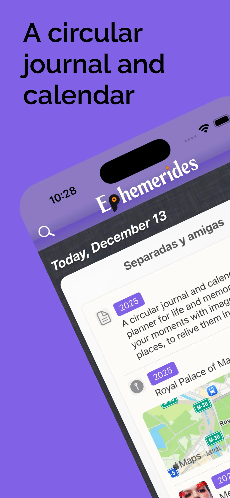
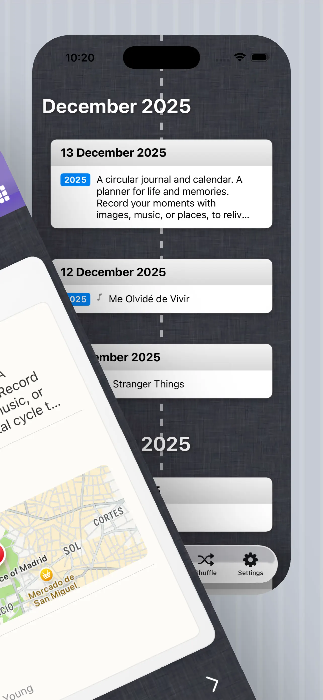
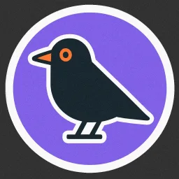
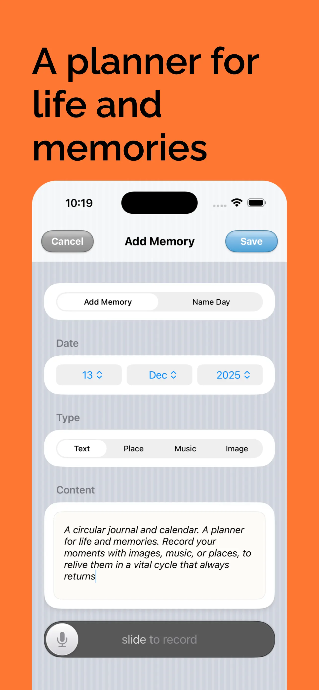
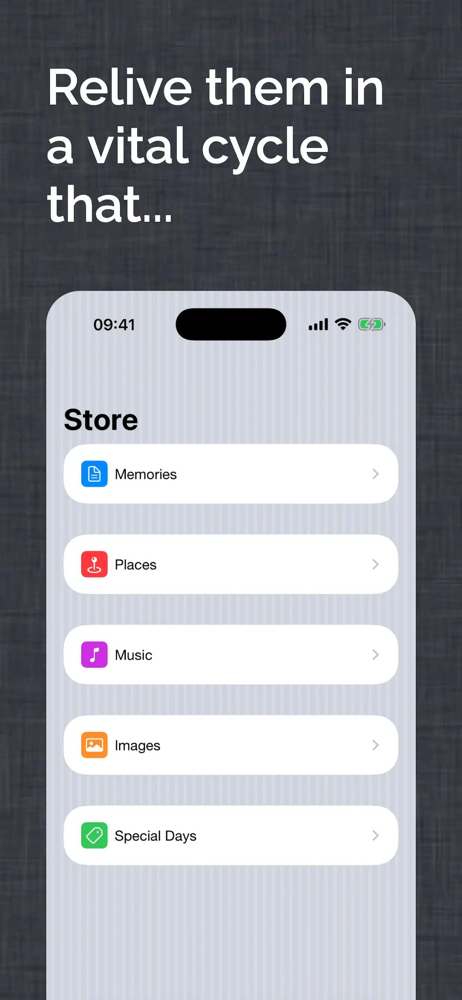
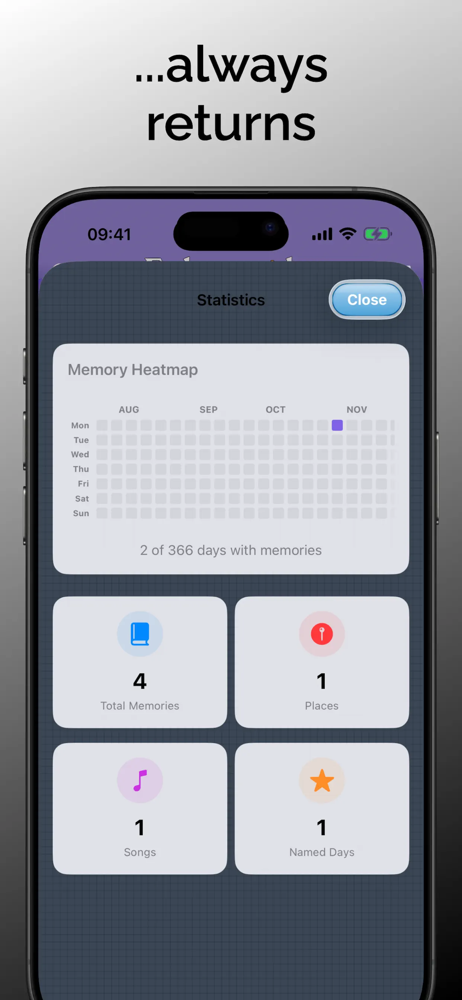
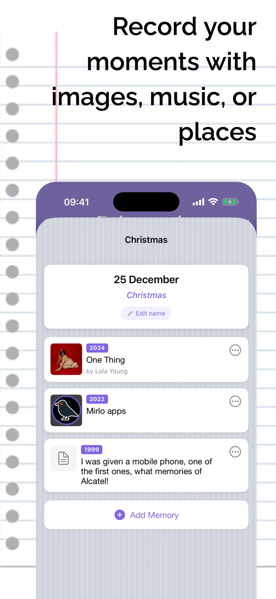
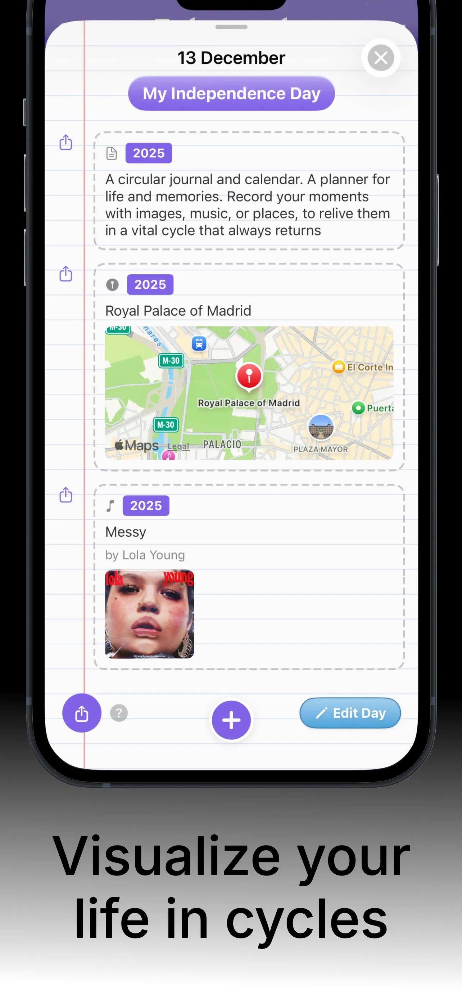

A calendar for your story
Browse your dates and revisit what you were doing on the same day in earlier years.
Ephemerides is a personal journal for your life: save a moment to its date, then meet it again when that day returns.



A journal with a different rhythm
Write down a moment once. Find it again on the same day next year, or years from now.
Browse your dates and revisit what you were doing on the same day in earlier years.
Add notes, photos, audio, music and places to the moments you want to remember.
Explore your timeline and find saved moments whenever you want to revisit them.
See your moments in timeline widgets and on your memory map.
Pair your memories with historical events connected to each date.
Ask for writing prompts, year summaries and new ways to explore your memories.
A look inside
A familiar iOS feel, with a little Old OS 4 personality.
See your moments by date
Watch your story unfold across the years

Add a memory to the date it belongs to

Memories, places, music, images and special days

Explore your memory patterns

Bring together memories linked to meaningful dates

Keep the notes, places and music linked to a date
Quick answers
Ephemerides is a personal memory journal and calendar. Save moments by date and return to them as the calendar comes around again.
You can keep written memories and add photos, music, places and other personal moments to their dates.
Crumbie is Ephemerides’ assistant. It offers writing prompts and helps you explore your memories.
Yes. Create custom types to organize your memories.
See your memories from that date and related historical events.
Yes. You can see your memories in timeline widgets and on the memory map.
Version history
Discover Ephemerides on the App Store.
Download on theApp Store